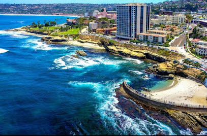
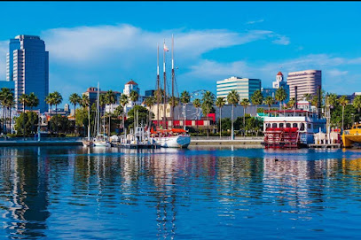
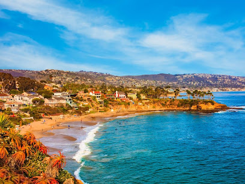

Demographic Information
La Jolla
La Jolla is a smart seaside area, known for its rugged coastline. Trails wind past pine trees and sandstone canyons in Torrey Pines State Natural Reserve, while the 2 courses at world-renowned Torrey Pines Golf Course sit atop sea cliffs. La Jolla Cove has sweeping ocean views, and the Shell Beach tide pools are home to anemones and crabs. Posh boutiques and waterfront restaurants dot walkable La Jolla Village.
Long Beach
Long Beach is a coastal city and port in Southern California. Moored in its Queensway Bay, RMS Queen Mary is a retired ocean liner and museum ship. The waterfront Aquarium of the Pacific features touch tanks and a shark lagoon. Modern and contemporary works are on display at the Museum of Latin American Art. Rancho Los Cerritos is a 19th-century adobe home and museum set in expansive gardens.
Laguna Beach
Laguna Beach is a small coastal city in Orange County, California. It’s known for its many art galleries, coves and beaches. Main Beach features tide pools and a boardwalk leading to the paths and gardens of nearby Heisler Park. Aliso Beach Park is a popular surf spot. The waters off Crystal Cove State Park are designated as an underwater park. Trails meander through coastal canyons in Laguna Coast Wilderness Park.
Weather
🌎 Carlsbad, California
Humidity %
Monday
10º/30º
Tuesday
10º/30º
Wednesday
10º/30º
Specialty Drinks Submitted
3